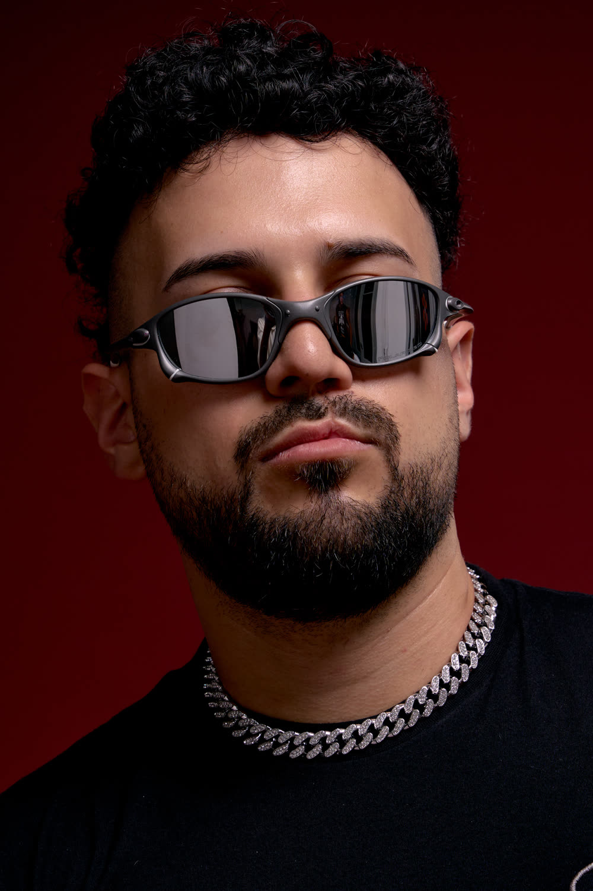
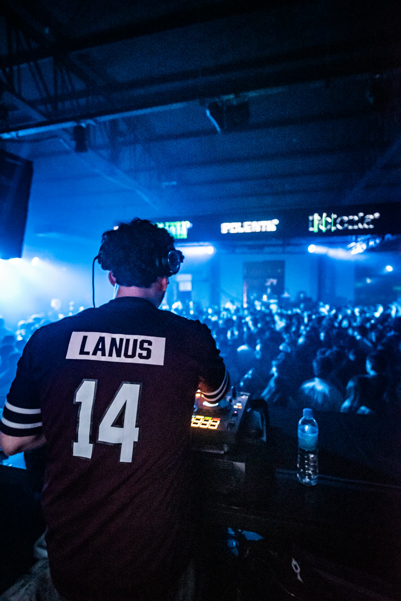
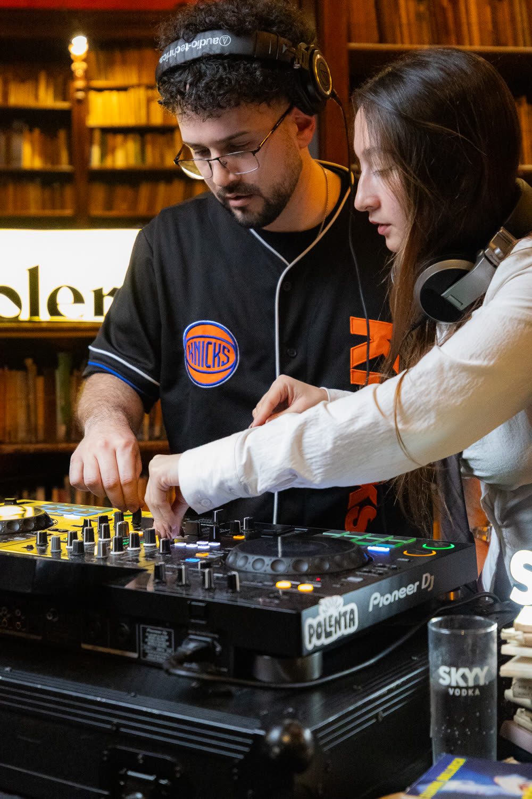

DJ y productor · Lanús, Buenos Aires 🇦🇷
DANK
Perreo · Funk BR 🇧🇷 · Reggaetón
Maximiliano Sotelo aka DANK es DJ y productor musical nacido en Lanús, Provincia de Buenos Aires.
Comenzó su carrera influenciado por el rap y el hip hop. Fue productor de eventos en el conurbano bonaerense “Trampa y Perreo” y fundador de “Vinilos del Sur”.
Su pasión por los beats y la producción lo llevaron a fusionar géneros como el
creando un estilo único que lo destaca.
Trayectoria
Sus mezclas explosivas lo llevaron a todos los escenarios de Buenos Aires y a participar en fechas como el after show de Trueno “El Último Baile” y la pre-escucha de “Buenas Noches” de Quevedo.
Desde 2019 se dedica exclusivamente a crear melodías enfocadas para que el público goce, sus producciones y sets se caracterizan por su capacidad para leer a la audiencia de manera técnica y precisa, generando así una energía contagiante que se conecta con el público en cualquier pista de baile.
Proyectos recientes. En el año 2023, ha lanzado THE_CHAMBER_OF_SECRETS_DJDANK, EP de remixes producidos por él, que ha recorrido el mundo.
En redes
Datos de noviembre de 2026.
Lo más visto
Sets


En vivo


Dónde tocó
- Polenta · @polenta.polenta
- La Biblioteca · @labiblioteca.ba
- La Pour House · @lapour.house
- Deseo · @deseobsas
- Club Le Loir · Lanús · @clubleloirlanus
- La Bunker Club · Paraná · @la.bunker.club
- Desacato · @desacatook
- Swervin’ · @swervba
- UNKWN · @unkwnmusic_
- HYPE · @hypeba
- Fiesta Calor · @fiestacalor
- Losa · @losa.oskuro
- Dársena · @darsenabar
- WhatMusic · San Valentín · @whatcreativo
- La Trastienda
- Complejo Art Media
- El Maquinal
- Kika Club
- Auditorio Sur
- Otra Historia
- Prestige
- Gruvin
- Sandungueo
- Remeneo Club
- YourPlace
Booking
Agencia Ruido
Instagram: @agencia.ruido
🇧🇷 DJ de funk e perreo de Buenos Aires. Contratações: booking@agenciaruido.net